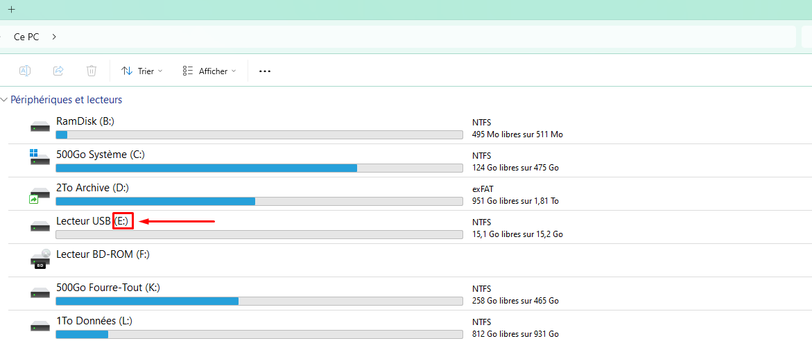

Faites attention au lecteur sélectionné ! Vérifiez le via l'explorateur de fichiers !
Comment savoir la lettre de lecteur concerné ? ►
Si vous souhaitez savoir la lettre de lecteur qui est lié à votre périphérique amovible (Carte SD, Clé USB, ...), vous pouvez aller sur l'explorateur de fichiers, puis trouvez votre lecteur et regardez sa lettre de lecteur comme dans l'exemple.
